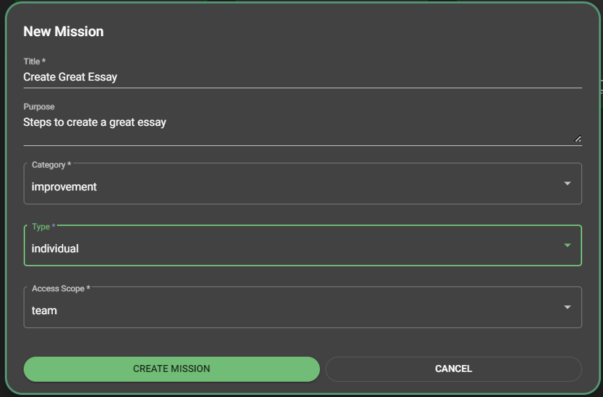

It is up to you whether you want to share your mission or template artifact with others or not. You make the choice by setting the Access Scope property
Shared artifacts appear with a "globe" icon in the upper right of their information summary card.
You can set this on the mission create dialog when you first create the mission. Later, you can change this value by clicking the properties icon of the mission while on the edit screen.
